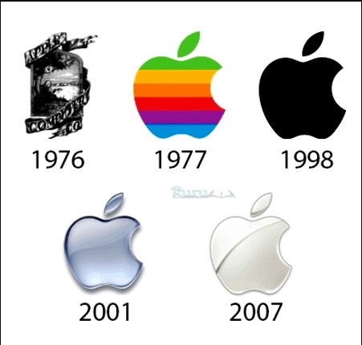

Apple Inc merupakan sebuah perusahaan yang berbentuk multinasional yang berkantor dalam pusat di Silicon Valley, California, Cupertino, terlibat dalam pengembangan, desain, dan penjualan barang seperti perangkat lunak komputer, elektronik, dan perangkat lunak.
Apple Inc telah didirikan pada 1 April 1976 dan dapat terintegrasi dengan Apple Computer, Inc dalam pada 3 Januari 1977. Pada tanggal 9 Januari 2007, kata telah dihapus sebagai mencerminkan dalam penekanan Apple di dalam bidang elektronik konsumen setelah peluncuran iPhone.
Apple telah dikenal dengan rangkaian produk perangkat lunaknya, termasuk sistem operasi IOS dan OS X, iTunes Music Player dan browser web Safari, dan perangkat keras seperti laptop MacBook Pro, komputer desktop iMac, dan pemutar lagu iPod, MacBook Air, dan ponsel iPhone.
Sejarah Pendirian Apple untuk salah satu bagian dari sejarah yayasan Apple, nama, dan logo dalam perusahaan dalam teknologi ini mempunyai sebuah kisah tersendiri. Terdapat beberapa teori tentang mengapa dalam perusahaan Apple menggunakan namanya dengan sebuah logo ikonik.
Nama Apple, pada awalnya telah terinspirasi oleh kisah Newton dengan sebuah apel yang jatuh di kepalanya. Oleh karena itu, logo asli dalam sebuah Perusahaan Apple merupakan sebuah gambar Newton yang duduk di dalam bawah pohon.
Akan tetapi, pada 1977, Jobs telah merasa dalam logo itu sangatlah sulit dan dapat diingat karena terlalu membentuk secara detail. Itu sebabnya dalam sebuah logo Apple yang telah didesain dalam tahun ini telah menjadi suatu apel yang diisi dan digigit dengan warna dalam pelangi yang tidak teratur.
Logo dalam sebuah Apple yang baru juga mempunyai sebuah makna yang menggunakan dalam suatu gigitan apel di bagian kanan atas apel untuk mengenali bahwa logo tersebut tidak berwarna oranye atau tomat. Warna dalam pelangi yang tidak teratur juga telah mencerminkan dalam sebuah filosofi bisnis Apple “Out of Standard Rules”, yang berarti kebebasan dan keberanian perusahaan Apple sebagai terus merevolusi dan berinovasi dalam sebuah teknologi.
Namun pada akhirnya, Jobs telah memutuskan sebagai mengganti logo dalam Apple dengan warna yang berbeda, sedangkan dalam logo Apple Monochromatic yang sebelumnya digunakan lebih sederhana dan lebih minimalis.
Apple Inc. baru saja membukukan kuartal terkuat pada bulan Juni, dengan hampir dua kali lipat keuntungan dan pendapatan besar didapat dari penjualan iPhone. Meskipun demikian, perusahaan mengatakan saham tetap merosot dan memproyeksikan pertumbuhan lebih lambat untuk periode saat ini.
Perusahaan membukukan laba bersih fiskal kuartal ketiga sebesar USD21,74 miliar, atau USD1,30 per saham, naik dari USD11,25 miliar, atau 65 sen per saham, setahun sebelumnya. Analis yang dilacak oleh FactSet mengharapkan laba per saham mencapai USD1,01.
Pendapatan untuk kuartal ini naik menjadi USD81,43 miliar dari USD59,69 miliar, sementara analis telah mengantisipasi USD73,34 miliar. Kejutan positif terbesar datang di segmen iPhone, yang melampaui ekspektasi pendapatan lebih dari USD5 miliar.
Raksasa smartphone ini menghasilkan USD39,57 miliar dalam pendapatan iPhone saja, naik dari USD26,42 miliar setahun sebelumnya dan jauh di depan konsensus FactSet, yang menyerukan angka USD34,19 miliar.
Sekali lagi, Apple menolak untuk memberikan perkiraan pendapatan numerik untuk periode saat ini.
"Apple mengharapkan pertumbuhan pendapatan tahun-ke-tahun bisa mencapai dua digit pada kuartal September nanti, meskipun dengan tingkat pertumbuhan tidak setinggi 36% yang terlihat pada kuartal Juni," ujar Chief Financial Officer Luca Maestri mengutip laman Reuters Rabu (28/7/2021).
Dia juga menambahkan perusahaan mengantisipasi dampak yang kurang menguntungkan dari valuta asing, kembali ke pertumbuhan penjualan produk dan bisnis jasa lainnya.
Meskipun perusahaan mampu membatasi dampak kendala pasokan pada kuartal Juni, Apple mengharapkan angka yang lebih tinggi pada kuartal September nanti, terutama pada penjualan produk iPhone dan iPad.
Perusahaan telah melihat kinerja yang kuat dari bisnis iPad dan Mac di tengah pandemi karena ledakan pekerjaan jarak jauh atau Work From Home memicu permintaan untuk perangkat tersebut.
Apple menghasilkan USD8,24 miliar pendapatan untuk produk Mac di kuartal tersebut, naik dari USD7,08 miliar setahun sebelumnya, serta USD7,37 miliar pendapatan iPad, naik dari USD6,59 miliar setahun lalu.
Apple melihat pendapatan untuk unit layanannya naik menjadi US17,49 miliar dari US13,16 miliar tahun lalu, di atas perkiraan sebesar US16,26 miliar. Total pendapatan layanan ini adalah rekor sepanjang masa.
Perusahaan membukukan pendapatan USD8,78 miliar dari segmen perangkat yang dapat dikenakan, rumah, dan aksesori. Itu jauh lebih baik dibandingkan dengan USD6,45 miliar setahun sebelumnya dan konsensus FactSet USD7,83 miliar.
Saham Apple telah naik lebih dari 10% sepanjang tahun ini karena Dow Jones Industrial Average DJIA, -0,24%, di mana Apple adalah salah satu komponennya, telah naik hingga 14%.